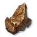
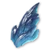
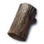
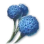
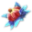
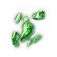
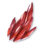

Coleta e fabricação
Onde investir seus pontos de coleta, quais duas ramificações maximizar e como funciona a cadeia de fabricação.
Dados do cliente Global, comparados pelo projeto original com trueeevil, Silvias, TitanTheF e Aragon em 2–3 de outubro. trueeevilSilviasTitanTheF (video)AragonTitanTheF (sheet)
- Extração de Essência: onde os pontos vão
- Que segundo ramo?
- Odyle → qualquer recurso
- A cadeia de fabricação
- Antes que você craft
- Nivelar rápido.
- Fazendo kinah
Extração de Essência: onde os pontos vão
Os níveis de coleta dão dois tipos de pontos: habilidades comuns à esquerda, ramos à direita.
Ore.

1 Ore SeekerGem.

1 Seeker GemDiário.

1 Seeker de DiáriosHerb.

1 Herb SeekerIngrediente

1 Cozinhando Ingrediente SeekerOdyle Sempre no máximo.

1 Odyle SeekerMax dois ramos: Odyle e o recurso do item que você craft primeiro.
Lady Luck só ajuda quando o medidor de falhas já está alto, e não aumenta a nota. 50 nós ao nível. 10. O primeiro ponto de um ramo também mostra seus nós no minimapa.
Que segundo ramo?
O recurso do item que você quer criar primeiro, geralmente sua arma.
Ore.
Armadura, armas e guardas
Gem.
Acessórios (Handicrafting)
Diário.
Arcos e varas (Handicrafting)
Herb.
Alquimia: poções, orbitas e livros de magia, manastones
Ingrediente
Cozinhar - pode esperar
Odyle
Cada nave, asas, energia Odyle e se transforma em qualquer outro recurso.
Odyle qualquer recurso
Mesmo grau.
Odyle branco faz recursos brancos, verde faz verde, até ouro.
Compare os preços
Se Odyle é mais bamouse no mercado do que o recurso, compre Odyle e morfa-lo - TitanTheF pagou metade para seus logs desta forma.
Odyle grátis
Conquistar masmorras deixam os nós Odyle após o último chefe, outra razão para atingir a filial primeiro.
A cadeia de fabricação
Cada nave pode falhar e o item quebra - mais frequentemente, quanto maior a nota. Um processo dá ao item uma nota maior, que você precisa para o próximo passo.
5 estatísticas, não 4
Um item trabalhado roda cinco estatísticas, um calabouço item quatro; com uma pedra filósofa - seis contra cinco.
Herança 100%
O próximo nível é feito de seu item com um sucesso garantido, melhorias e estatísticas continuam.
Nunca substituído.
Faça uma vez, depois atualize o mesmo item após o patch.
Antes que você craft
Profissão 30 +
Nivelar a profissão em receitas baratas antes de azul e ouro fabricação.
Odds reais.
O "+ 90%" na janela da nave é cerca de + 9% em cima da chance base (TitanTheF).
Falharam em branco.
Entregue-os para fornecer pedidos de pontos Abyss, vendê-los ou quebrá-los.
Nivelar rápido.
- Arremesso de nível. Sapphire Gemstone: 40–60 As veias levam você para Novice. 50, então a busca verde da cidade NPC (

Ruby Gemstone) abre Profissional. - Faça os itens cinza mais bamouses até o Novice 20 e comece a cadeia.
- Animais de estimação da fazenda, enquanto se juntam... eles largam pedras de refinação e materiais de fabricação.
- Responda a verificação anti-bot quando aparecer durante longas sessões de reunião.
Fazendo kinah
Fonte: Aragon
- Aragão viu 2,000 Kinah cada uma pela manhã, e os preços da noite são mais altos.
- Por vender pedras preciosas, ele arrasa Lady Luck em vez de Delicate Touch, uma build de dinheiro, não uma criação.
- Não pague mais por balas em branco prontas, eles ainda precisam de materiais caros.